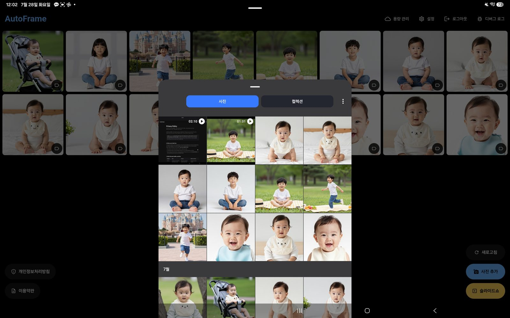

자동 슬라이드쇼
일정 시간마다 크로스페이드로 부드럽게 전환. 탭 한 번으로 액자 모드가 켜집니다.
Android · 태블릿 · 폰
AutoFrame은 안 쓰는 안드로이드 태블릿을 거실 디지털 액자로 바꿔주는 앱입니다. 내 Google Drive에 올린 사진·동영상이 부드럽게 넘어가고, 사진 위에 아이 나이와 기념일 경과 시간이 함께 뜹니다.
실제 앱 화면에 가상의 AI 아기 사진으로 만들어진 목업입니다
AutoFrame은 모든 데이터를 이용자 본인의 Google 계정에 기록합니다. 회사는 별도의 서버를 운영하거나 이용자의 사진·데이터를 저장하지 않으며, 광고·분석 SDK도 사용하지 않습니다. 개인정보 처리방침
복잡한 설정 없이, 켜두면 계속 돌아갑니다.
설치만 하면 바로 쓸 수 있는 액자의 기본기.
일정 시간마다 크로스페이드로 부드럽게 전환. 탭 한 번으로 액자 모드가 켜집니다.
갤러리에서 여러 장을 한 번에 업로드. 파일은 본인 Google Drive에 저장됩니다.
영상은 끝까지 재생한 뒤 다음 항목으로. 재생 중 음소거를 켜고 끌 수 있습니다.
슬라이드쇼 중 새로 올린 사진이 자동으로 목록에 추가되고 안내 배너가 뜹니다.
격자에서 사진을 탭하면 크게 열리고 확대·축소할 수 있습니다.
사용량 / 전체 용량 / 사용률 게이지 표시. 여러 사진을 골라 직접 삭제도 가능합니다.
액자처럼 24시간 켜둘 수 있게 화면 유지. 배터리 최적화 예외 안내도 함께 제공합니다.
설정에서 언어를 바꾸면 앱 재시작 없이 모든 화면에 바로 적용됩니다.
액자를 오래, 예쁘게 쓰기 위한 기능들.
슬라이드쇼 화면의 AutoFrame 워터마크가 사라집니다. 사진만 깨끗하게.
인물의 생년월일, 이벤트 기준일을 등록하면 촬영 당시 나이와 현재 기준 경과 시간이 사진 위에 표시됩니다.
중요한 사진을 보호해 두면 자동 정리와 일괄 삭제에서 제외됩니다.
최근 N장만 남기고 정리, 사용률이 임계값을 넘으면 오래된 사진부터 자동 정리.
전환 주기, 사진 위 글씨 표시 여부와 크기를 취향대로 조절할 수 있습니다.
설치하고 5분이면 거실에 액자가 생깁니다.
가족 공용 액자용 Google 계정으로 로그인합니다. 계정이 없으면 앱에서 바로 만들 수 있습니다.
갤러리에서 여러 장을 한 번에 업로드. 인물·이벤트를 등록해 두면 나이와 경과 시간이 자동 계산됩니다.
슬라이드쇼 버튼 한 번. 안 쓰는 태블릿을 거치대에 올려두면 가족 액자 완성입니다.

AutoFrame이 Google 계정에 요청하는 권한은 아래가 전부입니다.
drive.file액자에 띄울 사진·동영상을 이용자 본인의 Google Drive에 올리고, 슬라이드쇼로 다시 불러오고, 앱에서 지우기 위해 필요합니다. 이 권한은 AutoFrame이 만들었거나 이용자가 앱에서 직접 고른 파일에만 적용됩니다. Drive에 이미 들어 있는 다른 사진·문서는 읽을 수 없습니다.
openid email profile지금 어느 계정으로 액자가 돌아가는지 앱에 표시하고, 사진을 저장할 Drive 계정을 특정하기 위해 필요합니다. 연락처·캘린더·메일·사진 보관함 등 다른 Google 데이터는 요청하지 않습니다.
사진·동영상과 인물·기념일 설정은 전부 이용자 본인의 Google Drive에 남습니다. AutoFrame은 별도 서버를 운영하지 않고, 이용자의 Google 데이터를 수집·전송·판매하지 않으며, 광고·분석 SDK도 넣지 않았습니다. 앱에서 로그아웃하거나 Google 계정 설정에서 접근을 해제하면 연결이 끊깁니다.
자세한 내용은 개인정보 처리방침에 있습니다.
본인 Google Drive에 저장됩니다. AutoFrame은 사진을 보여주는 액자이며 별도 저장·백업을 책임지지 않습니다. 원본은 따로 보관하세요.
됩니다. 슬라이드쇼에서 영상은 끝까지 재생된 뒤 다음 항목으로 넘어가고, 재생 중 음소거를 켜고 끌 수 있습니다.
인물의 생년월일과 사진 촬영일을 비교해 촬영 당시 나이를, 오늘 날짜 기준으로 현재 나이를 함께 보여줍니다. 이벤트도 같은 방식으로 경과 시간을 표시합니다. 인물·이벤트 기능은 프리미엄입니다.
사용량 게이지로 상태를 확인하고 직접 골라 지울 수 있습니다. 최근 N장만 남기기와 임계값 자동 정리는 프리미엄 기능입니다. 삭제는 영구적이라 복구되지 않습니다.
화면 꺼짐 방지 기능이 있고, 오래 켜둘 때 안정적으로 동작하도록 배터리 최적화 예외 등록을 안내합니다. 전원은 연결해 두는 걸 권장합니다.
Android 폰·태블릿·폴더블을 지원합니다. 화면 폭에 맞춰 격자 열 수가 자동으로 늘어납니다.